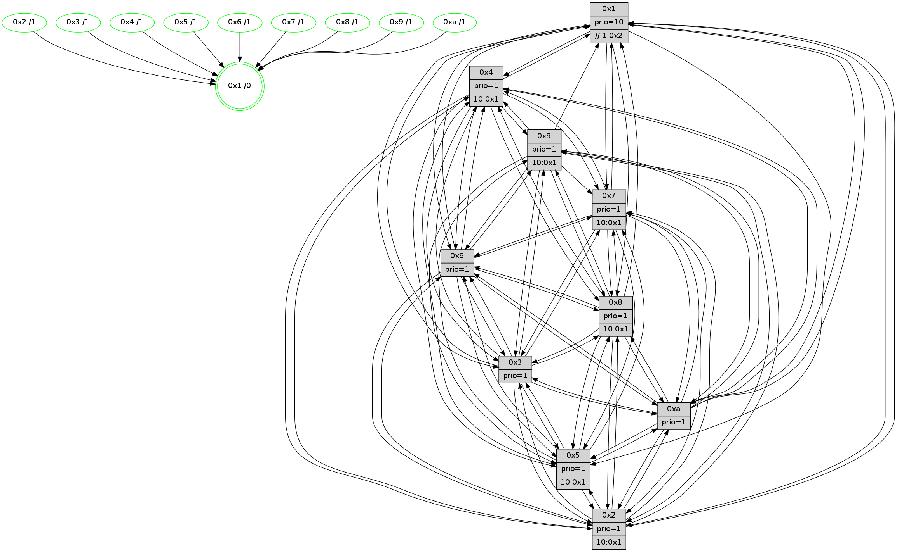

>> << IDX [start] -100 -25 -5 +0 +5 +25 +100 [1175.53186798]
 Previous packets
----------------------------------------------------------------------
1170.014954 beacon01(faad) #0 coord=01,02,03,04,05,06,07,0a,09,08 cycle=688.0ms assoc
-- color-indic=1 64 b3 b1
1170.024937 beacon02(faad) #0 coord=01,02,03,04,05,06,07,0a,09,08 cycle=688.0ms assoc 64 20 80
1170.034936 beacon03(faad) #0 coord=01,02,03,04,05,06,07,0a,09,08 cycle=688.0ms assoc 64 5a cd
1170.044936 beacon04(faad) #0 coord=01,02,03,04,05,06,07,0a,09,08 cycle=688.0ms assoc 64 2d 27
1170.054938 beacon05(faad) #0 coord=01,02,03,04,05,06,07,0a,09,08 cycle=688.0ms assoc 64 57 6a
1170.064935 beacon06(faad) #0 coord=01,02,03,04,05,06,07,0a,09,08 cycle=688.0ms assoc 64 d9 bd
1170.074937 beacon07(faad) #0 coord=01,02,03,04,05,06,07,0a,09,08 cycle=688.0ms assoc 64 a3 f0
1170.084942 beacon0a(faad) #0 coord=01,02,03,04,05,06,07,0a,09,08 cycle=688.0ms assoc 64 d2 fb
1170.094942 beacon09(faad) #0 coord=01,02,03,04,05,06,07,0a,09,08 cycle=688.0ms assoc 64 5c 2c
1170.104943 beacon08(faad) #0 coord=01,02,03,04,05,06,07,0a,09,08 cycle=688.0ms assoc 64 26 61
1170.115938 [Hello(1): seq=656 sym=4,2,5,10,3,8,6,7 sysInfo=coloring-mode-on,ColoringModeRequestCalled stat=4:6,3,3,5/2:8,10,6,2/5:3,7,13,7/10:1,3,11,6/3:13,13,15,7/8:4,15,15,3/6:10,0,7,13/7:6,3,1,14]
1170.118374 [Hello(5): seq=747 sym=7,6,4,3,1,9,8,10,2 sysInfo=hasWarning stat=7:3,13,8,13/6:3,6,10,2/4:2,6,0,13/3:7,2,1,14/1:9,3,4,1/9:6,1,1,9/8:0,0,12,2/10:9,0,0,8/2:1,4,2,6]
1170.121100 [Hello(6): seq=747 sym=3,5,4,7,9,8,10,1 sysInfo=hasWarning stat=3:12,6,15,12/5:9,14,1,1/4:7,12,11,5/7:10,5,7,12/9:9,1,5,8/8:12,10,0,5/10:4,4,5,12/1:14,6,15,1]
1170.124432 [Color(10) seq=336 @0:0 prio=1]
1170.127949 [Hello(3): seq=747 sym=1,7,6,2,4,8,9,10,5 sysInfo=hasWarning stat=1:9,6,12,0/7:12,6,14,12/6:6,12,1,0/2:3,7,2,0/4:6,3,1,11/8:8,2,11,4/9:4,10,4,14/10:14,6,13,4/5:8,12,8,15]
1170.130795 [Color(3) seq=376 @0:0 prio=1]
1170.133478 [Hello(2): seq=743 sym=4,5,7,6,3,9,8,10,1 sysInfo=hasWarning stat=4:3,8,6,11/5:12,7,12,0/7:13,3,7,14/6:9,15,12,11/3:15,12,11,9/9:10,10,0,7/8:7,5,6,11/10:6,6,2,10/1:0,12,11,0]
1170.137900 [Color(2) seq=323 @0:0 prio=1 >10.@1,1.@3,1.@4,1.@5]
1170.139576 [Color(6) seq=379 @0:0 prio=1]
----------------------------------------------------------------------
1170.803083 beacon01(faad) #0 coord=01,02,03,04,05,06,07,0a,09,08 cycle=688.0ms assoc
-- color-indic=1 64 0f b4
1170.813065 beacon02(faad) #0 coord=01,02,03,04,05,06,07,0a,09,08 cycle=688.0ms assoc 64 9c 85
1170.823065 beacon03(faad) #0 coord=01,02,03,04,05,06,07,0a,09,08 cycle=688.0ms assoc 64 e6 c8
1170.833067 beacon04(faad) #0 coord=01,02,03,04,05,06,07,0a,09,08 cycle=688.0ms assoc 64 91 22
1170.843066 beacon05(faad) #0 coord=01,02,03,04,05,06,07,0a,09,08 cycle=688.0ms assoc 64 eb 6f
1170.853066 beacon06(faad) #0 coord=01,02,03,04,05,06,07,0a,09,08 cycle=688.0ms assoc 64 65 b8
1170.863067 beacon07(faad) #0 coord=01,02,03,04,05,06,07,0a,09,08 cycle=688.0ms assoc 64 1f f5
1170.873071 beacon0a(faad) #0 coord=01,02,03,04,05,06,07,0a,09,08 cycle=688.0ms assoc 64 6e fe
1170.883071 beacon09(faad) #0 coord=01,02,03,04,05,06,07,0a,09,08 cycle=688.0ms assoc 64 e0 29
1170.893074 beacon08(faad) #0 coord=01,02,03,04,05,06,07,0a,09,08 cycle=688.0ms assoc 64 9a 64
1170.904305 [Hello(10): seq=680 sym=6,2,3,8,7,5,9,4,1 sysInfo=hasWarning stat=6:1,0,2,6/2:15,10,3,10/3:1,8,7,11/8:10,7,12,2/7:9,10,4,6/5:12,9,14,14/9:10,1,4,3/4:2,9,4,0/1:11,12,9,1]
1170.907370 [Color(5) seq=341 @0:0 prio=1 >10.@1,1.@2,1.@3,1.@4]
1170.909242 [Hello(9): seq=691 sym=2,5,3,4,7,6,8,10,1 sysInfo=hasWarning stat=2:11,10,13,8/5:4,11,13,5/3:15,3,3,0/4:10,11,2,0/7:2,2,3,1/6:11,0,10,11/8:15,5,15,3/10:1,0,4,4/1:9,5,1,1]
1170.911742 PARSE ERROR************************
Traceback (most recent call last):
File "PacketAnalysis.py", line 167, in showOperaPacket
structPacket = OperaPacketParse.parsePacket(rawPacket)
File "../../pkg-python/HipSens/Core/OperaPacketParse.py", line 461, in parsePacket
return parseHelloMessage(data)
File "../../pkg-python/HipSens/Core/OperaPacketParse.py", line 127, in parseHelloMessage
assert struct.calcsize("H")*len(neighAddrList) == len(linkList)
AssertionError
48 30 07 00 02 eb 00 02 02 10 02 00 03 00 05 00 06 00 04 00 08 00 0a 00 01 00 53 04 00 02 00 00 4c 10 1c 1c 0b 82 16 a4 98 cf 15 16 00 10 5d f8 0f bd 4c 77
1170.914429 [Color(7) seq=293 @0:0 prio=1]
1170.916216 [Color(1) seq=428 @0:0 prio=10 >>1.@3,1.@4,1.@5]
1170.919584 [Hello(4): seq=747 sym=5,7,6,2,3,9,8,10,1 sysInfo= stat=5:2,6,15,15/7:15,15,5,1/6:7,6,2,12/2:8,10,12,14/3:4,2,3,12/9:3,13,7,11/8:1,6,1,6/10:3,15,12,13/1:4,2,0,1]
1170.923694 [Color(4) seq=304 @0:0 prio=1]
1170.929240 [Color(9) seq=320 @0:0 prio=1 >10.@1,1.@2,1.@3,1.@4]
1170.936649 [Hello(8): seq=691 sym=5,2,3,4,9,6,10,1 asym=7 sysInfo=hasWarning stat=5:12,0,5,0/2:5,7,3,10/3:0,12,6,0/4:15,5,8,10/9:4,8,9,3/6:14,9,4,13/10:5,0,11,4/1:12,13,14,0/7:15,1,3,0]
1170.941124 [Color(8) seq=346 @0:0 prio=1 >10.@1,1.@2,1.@3,1.@4]
----------------------------------------------------------------------
1171.591214 beacon01(faad) #0 coord=01,02,03,04,05,06,07,0a,09,08 cycle=688.0ms assoc
-- color-indic=1 64 8a 0a
1171.601197 beacon02(faad) #0 coord=01,02,03,04,05,06,07,0a,09,08 cycle=688.0ms assoc 64 19 3b
1171.611195 beacon03(faad) #0 coord=01,02,03,04,05,06,07,0a,09,08 cycle=688.0ms assoc 64 63 76
1171.621196 beacon04(faad) #0 coord=01,02,03,04,05,06,07,0a,09,08 cycle=688.0ms assoc 64 14 9c
1171.631197 beacon05(faad) #0 coord=01,02,03,04,05,06,07,0a,09,08 cycle=688.0ms assoc 64 6e d1
1171.641196 beacon06(faad) #0 coord=01,02,03,04,05,06,07,0a,09,08 cycle=688.0ms assoc 64 e0 06
1171.651198 beacon07(faad) #0 coord=01,02,03,04,05,06,07,0a,09,08 cycle=688.0ms assoc 64 9a 4b
1171.661202 beacon0a(faad) #0 coord=01,02,03,04,05,06,07,0a,09,08 cycle=688.0ms assoc 64 eb 40
1171.671202 beacon09(faad) #0 coord=01,02,03,04,05,06,07,0a,09,08 cycle=688.0ms assoc 64 65 97
1171.681202 beacon08(faad) #0 coord=01,02,03,04,05,06,07,0a,09,08 cycle=688.0ms assoc 64 1f da
1171.693992 [Hello(5): seq=748 sym=7,6,4,3,1,9,8,10,2 sysInfo=hasWarning stat=7:4,14,8,13/6:4,7,10,2/4:3,7,0,13/3:8,3,1,14/1:9,4,4,1/9:7,2,1,9/8:1,1,12,2/10:10,1,0,8/2:2,5,2,6]
1171.696930 [Hello(3): seq=748 sym=1,7,6,2,4,8,9,10,5 sysInfo=hasWarning stat=1:10,7,12,0/7:13,7,14,12/6:6,13,1,0/2:4,8,2,0/4:7,4,1,11/8:9,3,11,4/9:5,11,4,14/10:15,6,13,4/5:9,13,8,15]
1171.699729 [Hello(6): seq=748 sym=3,5,4,7,9,8,10,1 sysInfo=hasWarning stat=3:12,6,15,12/5:10,15,1,1/4:8,13,11,5/7:11,6,7,12/9:10,2,5,8/8:13,11,0,5/10:5,4,5,12/1:15,7,15,1]
1171.704352 [Color(6) seq=380 @0:0 prio=1]
1171.705974 [Color(10) seq=337 @0:0 prio=1]
1171.710276 [Color(3) seq=377 @0:0 prio=1]
1171.712905 [Hello(2): seq=744 sym=4,5,7,6,3,9,8,10,1 sysInfo=hasWarning stat=4:4,9,6,11/5:13,8,12,0/7:14,4,7,14/6:9,0,12,11/3:15,12,11,9/9:11,11,0,7/8:8,6,6,11/10:7,6,2,10/1:1,13,11,0]
1171.716374 [Color(2) seq=324 @0:0 prio=1 >10.@1,1.@3,1.@4,1.@5]
----------------------------------------------------------------------
1172.379346 beacon01(faad) #0 coord=01,02,03,04,05,06,07,0a,09,08 cycle=688.0ms assoc
-- color-indic=1 64 36 0f
1172.389329 beacon02(faad) #0 coord=01,02,03,04,05,06,07,0a,09,08 cycle=688.0ms assoc 64 a5 3e
1172.399329 beacon03(faad) #0 coord=01,02,03,04,05,06,07,0a,09,08 cycle=688.0ms assoc 64 df 73
1172.409331 beacon04(faad) #0 coord=01,02,03,04,05,06,07,0a,09,08 cycle=688.0ms assoc 64 a8 99
1172.419329 beacon05(faad) #0 coord=01,02,03,04,05,06,07,0a,09,08 cycle=688.0ms assoc 64 d2 d4
1172.429329 beacon06(faad) #0 coord=01,02,03,04,05,06,07,0a,09,08 cycle=688.0ms assoc 64 5c 03
1172.439329 beacon07(faad) #0 coord=01,02,03,04,05,06,07,0a,09,08 cycle=688.0ms assoc 64 26 4e
1172.449333 beacon0a(faad) #0 coord=01,02,03,04,05,06,07,0a,09,08 cycle=688.0ms assoc 64 57 45
1172.459334 beacon09(faad) #0 coord=01,02,03,04,05,06,07,0a,09,08 cycle=688.0ms assoc 64 d9 92
1172.469334 beacon08(faad) #0 coord=01,02,03,04,05,06,07,0a,09,08 cycle=688.0ms assoc 64 a3 df
1172.481184 [Hello(10): seq=681 sym=6,2,3,8,7,5,9,4,1 sysInfo=hasWarning stat=6:1,0,2,6/2:0,11,3,10/3:1,9,7,11/8:11,8,12,2/7:10,11,4,6/5:12,10,14,14/9:11,2,4,3/4:3,10,4,0/1:12,13,9,1]
1172.484228 [Color(5) seq=342 @0:0 prio=1 >10.@1,1.@2,1.@3,1.@4]
1172.486345 [Hello(4): seq=748 sym=5,7,6,2,3,9,8,10,1 sysInfo= stat=5:3,6,15,15/7:15,15,5,1/6:8,7,2,12/2:9,11,12,14/3:5,3,3,12/9:3,14,7,11/8:2,7,1,6/10:4,0,12,13/1:4,2,0,1]
1172.489310 [Hello(8): seq=692 sym=5,2,3,4,9,6,10,1 asym=7 sysInfo=hasWarning stat=5:13,1,5,0/2:6,8,3,10/3:1,13,6,0/4:15,5,8,10/9:4,8,9,3/6:15,10,4,13/10:6,1,11,4/1:12,13,14,0/7:15,1,3,0]
1172.492249 [Hello(9): seq=692 sym=2,5,3,4,7,6,8,10,1 sysInfo=hasWarning stat=2:12,11,13,8/5:5,12,13,5/3:0,4,3,0/4:10,11,2,0/7:2,2,3,1/6:12,1,10,11/8:0,6,15,3/10:2,1,4,4/1:9,5,1,1]
1172.494744 [Color(4) seq=305 @0:0 prio=1 >10.@1,1.@2,1.@3,1.@5]
1172.496812 [Color(9) seq=321 @0:0 prio=1 >10.@1,1.@2,1.@3,1.@4]
1172.502709 [Color(8) seq=347 @0:0 prio=1 >10.@1,1.@2,1.@3,1.@4]
1172.506190 [Hello(7): seq=748 sym=2,3,5,6,4,8,10,1 sysInfo=hasWarning stat=2:13,2,12,1/3:3,9,11,0/5:5,11,6,1/6:0,13,8,9/4:7,2,5,1/8:1,2,0,0/10:9,0,13,5/1:13,12,15,0]
1172.509544 [Color(7) seq=294 @0:0 prio=1 >10.@1,1.@2,1.@3,1.@4]
----------------------------------------------------------------------
1173.167476 beacon01(faad) #0 coord=01,02,03,04,05,06,07,0a,09,08 cycle=688.0ms assoc
-- color-indic=1 64 f2 01
1173.177459 beacon02(faad) #0 coord=01,02,03,04,05,06,07,0a,09,08 cycle=688.0ms assoc 64 61 30
1173.187459 beacon03(faad) #0 coord=01,02,03,04,05,06,07,0a,09,08 cycle=688.0ms assoc 64 1b 7d
1173.197459 beacon04(faad) #0 coord=01,02,03,04,05,06,07,0a,09,08 cycle=688.0ms assoc 64 6c 97
1173.207460 beacon05(faad) #0 coord=01,02,03,04,05,06,07,0a,09,08 cycle=688.0ms assoc 64 16 da
1173.217460 beacon06(faad) #0 coord=01,02,03,04,05,06,07,0a,09,08 cycle=688.0ms assoc 64 98 0d
1173.227460 beacon07(faad) #0 coord=01,02,03,04,05,06,07,0a,09,08 cycle=688.0ms assoc 64 e2 40
1173.237463 beacon0a(faad) #0 coord=01,02,03,04,05,06,07,0a,09,08 cycle=688.0ms assoc 64 93 4b
1173.257466 beacon08(faad) #0 coord=01,02,03,04,05,06,07,0a,09,08 cycle=688.0ms assoc 64 67 d1
1173.268703 PARSE ERROR************************
Traceback (most recent call last):
File "PacketAnalysis.py", line 167, in showOperaPacket
structPacket = OperaPacketParse.parsePacket(rawPacket)
File "../../pkg-python/HipSens/Core/OperaPacketParse.py", line 461, in parsePacket
return parseHelloMessage(data)
File "../../pkg-python/HipSens/Core/OperaPacketParse.py", line 127, in parseHelloMessage
assert struct.calcsize("H")*len(neighAddrList) == len(linkList)
AssertionError
48 30 01 00 02 92 00 02 02 10 04 00 02 00 05 00 0a 00 03 00 08 00 06 00 07 00 53 04 00 84 00 00 4c 10 53 47 26 ca 7d 84 6b 53 7f fe 3f 15 d7 1b e1 47 4c 21
1173.273668 [Hello(2): seq=745 sym=4,5,7,6,3,9,8,10,1 sysInfo=hasWarning stat=4:5,10,6,11/5:13,9,12,0/7:15,5,7,14/6:9,0,12,11/3:15,12,11,9/9:12,12,0,7/8:9,7,6,11/10:8,6,2,10/1:1,13,11,0]
1173.276103 [Hello(3): seq=749 sym=1,7,6,2,4,8,9,10,5 sysInfo=hasWarning stat=1:11,8,12,0/7:14,8,14,12/6:6,13,1,0/2:5,9,2,0/4:8,5,1,11/8:10,4,11,4/9:6,11,4,14/10:0,6,13,4/5:9,14,8,15]
1173.279239 [Color(3) seq=378 @0:0 prio=1]
1173.281564 [Hello(5): seq=749 sym=7,6,4,3,9,8,10,2 sysInfo=hasWarning stat=7:5,15,8,13/6:5,8,10,2/4:4,8,0,13/3:9,4,1,14/9:8,3,1,9/8:2,2,12,2/10:11,2,0,8/2:3,6,2,6]
1173.285746 [Hello(6): seq=749 sym=2,3,5,4,7,9,8,10,1 sysInfo=hasWarning stat=2:0,1,0,0/3:12,7,15,12/5:11,0,1,1/4:9,14,11,5/7:12,7,7,12/9:11,2,5,8/8:14,12,0,5/10:6,5,5,12/1:15,8,15,1]
1173.288282 [Color(10) seq=338 @0:0 prio=1]
1173.289860 [Color(6) seq=381 @0:0 prio=1]
1173.292977 [Color(2) seq=325 @0:0 prio=1 >10.@1,1.@3,1.@4,1.@5]
----------------------------------------------------------------------
1173.955608 beacon01(faad) #0 coord=01,02,03,04,05,06,07,0a,09,08 cycle=688.0ms assoc
-- color-indic=1 64 4e 04
1173.965591 beacon02(faad) #0 coord=01,02,03,04,05,06,07,0a,09,08 cycle=688.0ms assoc 64 dd 35
1173.975590 beacon03(faad) #0 coord=01,02,03,04,05,06,07,0a,09,08 cycle=688.0ms assoc 64 a7 78
1173.985591 beacon04(faad) #0 coord=01,02,03,04,05,06,07,0a,09,08 cycle=688.0ms assoc 64 d0 92
1173.995591 beacon05(faad) #0 coord=01,02,03,04,05,06,07,0a,09,08 cycle=688.0ms assoc 64 aa df
1174.005590 beacon06(faad) #0 coord=01,02,03,04,05,06,07,0a,09,08 cycle=688.0ms assoc 64 24 08
1174.015591 beacon07(faad) #0 coord=01,02,03,04,05,06,07,0a,09,08 cycle=688.0ms assoc 64 5e 45
1174.025597 beacon0a(faad) #0 coord=01,02,03,04,05,06,07,0a,09,08 cycle=688.0ms assoc 64 2f 4e
1174.035595 beacon09(faad) #0 coord=01,02,03,04,05,06,07,0a,09,08 cycle=688.0ms assoc 64 a1 99
1174.045596 beacon08(faad) #0 coord=01,02,03,04,05,06,07,0a,09,08 cycle=688.0ms assoc 64 db d4
1174.057470 [Hello(10): seq=682 sym=6,2,3,8,7,5,9,4,1 sysInfo=hasWarning stat=6:1,1,2,6/2:0,12,3,10/3:1,9,7,11/8:12,9,12,2/7:11,12,4,6/5:12,11,14,14/9:12,2,4,3/4:4,11,4,0/1:13,14,9,1]
1174.061203 [Hello(4): seq=749 sym=5,7,6,2,3,9,8,10,1 sysInfo= stat=5:4,6,15,15/7:0,0,5,1/6:9,8,2,12/2:10,12,12,14/3:5,3,3,12/9:3,15,7,11/8:2,8,1,6/10:5,1,12,13/1:5,2,0,1]
1174.064801 [Color(5) seq=343 @0:0 prio=1 >10.@1,1.@2,1.@3,1.@4]
1174.067762 [Hello(7): seq=749 sym=2,3,5,6,4,8,10,1 sysInfo=hasWarning stat=2:14,3,12,1/3:3,10,11,0/5:6,11,6,1/6:1,14,8,9/4:7,2,5,1/8:1,2,0,0/10:10,1,13,5/1:14,12,15,0]
1174.070767 [Color(7) seq=295 @0:0 prio=1 >10.@1,1.@2,1.@3,1.@4]
1174.072986 [Hello(8): seq=693 sym=5,2,3,4,9,6,7,10,1 sysInfo=hasWarning stat=5:14,1,5,0/2:7,9,3,10/3:1,14,6,0/4:15,5,8,10/9:4,8,9,3/6:0,11,4,13/7:0,2,3,0/10:7,2,11,4/1:13,13,14,0]
1174.075863 [Hello(9): seq=693 sym=2,5,3,4,7,6,8,10,1 sysInfo=hasWarning stat=2:13,12,13,8/5:6,12,13,5/3:0,5,3,0/4:10,11,2,0/7:3,3,3,1/6:13,2,10,11/8:0,7,15,3/10:3,2,4,4/1:10,5,1,1]
1174.080926 [Color(9) seq=322 @0:0 prio=1 >10.@1,1.@2,1.@3,1.@4]
1174.083427 [Color(8) seq=348 @0:0 prio=1 >10.@1,1.@2,1.@3,1.@4]
1174.087934 [Color(4) seq=306 @0:0 prio=1 >10.@1,1.@2,1.@3,1.@5]
1174.092086 [Color(1) seq=430 @0:0 prio=10 >>1.@2,1.@3,1.@4]
----------------------------------------------------------------------
1174.743738 beacon01(faad) #0 coord=01,02,03,04,05,06,07,0a,09,08 cycle=688.0ms assoc
-- color-indic=1 64 7a 1c
1174.753721 beacon02(faad) #0 coord=01,02,03,04,05,06,07,0a,09,08 cycle=688.0ms assoc 64 e9 2d
1174.763721 beacon03(faad) #0 coord=01,02,03,04,05,06,07,0a,09,08 cycle=688.0ms assoc 64 93 60
1174.773721 beacon04(faad) #0 coord=01,02,03,04,05,06,07,0a,09,08 cycle=688.0ms assoc 64 e4 8a
1174.783721 beacon05(faad) #0 coord=01,02,03,04,05,06,07,0a,09,08 cycle=688.0ms assoc 64 9e c7
1174.793720 beacon06(faad) #0 coord=01,02,03,04,05,06,07,0a,09,08 cycle=688.0ms assoc 64 10 10
1174.803722 beacon07(faad) #0 coord=01,02,03,04,05,06,07,0a,09,08 cycle=688.0ms assoc 64 6a 5d
1174.813728 beacon0a(faad) #0 coord=01,02,03,04,05,06,07,0a,09,08 cycle=688.0ms assoc 64 1b 56
1174.823726 beacon09(faad) #0 coord=01,02,03,04,05,06,07,0a,09,08 cycle=688.0ms assoc 64 95 81
1174.833726 beacon08(faad) #0 coord=01,02,03,04,05,06,07,0a,09,08 cycle=688.0ms assoc 64 ef cc
1174.845578 [Hello(1): seq=659 sym=4,2,5,10,3,8,6,7 sysInfo=coloring-mode-on,ColoringModeRequestCalled stat=4:7,4,3,5/2:11,13,6,2/5:5,8,13,7/10:4,6,11,6/3:14,0,15,7/8:5,1,15,3/6:12,2,7,13/7:7,4,1,14]
1174.849447 [Hello(6): seq=750 sym=2,3,5,4,7,9,8,10,1 sysInfo=hasWarning stat=2:0,2,0,0/3:12,7,15,12/5:11,1,1,1/4:10,15,11,5/7:13,8,7,12/9:12,3,5,8/8:15,13,0,5/10:7,5,5,12/1:0,9,15,1]
1174.853838 [Color(10) seq=339 @0:0 prio=1]
1174.856226 [Color(6) seq=382 @0:0 prio=1]
1174.857726 [Hello(3): seq=750 sym=1,7,6,2,4,8,9,10,5 sysInfo=hasWarning stat=1:12,9,12,0/7:15,9,14,12/6:7,14,1,0/2:5,10,2,0/4:9,6,1,11/8:11,5,11,4/9:7,12,4,14/10:1,7,13,4/5:10,15,8,15]
1174.861075 [Hello(2): seq=746 sym=4,5,7,6,3,9,8,10,1 sysInfo=hasWarning stat=4:6,11,6,11/5:13,10,12,0/7:0,6,7,14/6:9,0,12,11/3:0,12,11,9/9:13,13,0,7/8:10,8,6,11/10:9,6,2,10/1:2,14,11,0]
1174.865509 [Color(2) seq=326 @0:0 prio=1 >10.@1,1.@3,1.@4,1.@5]
1174.867230 [Color(3) seq=379 @0:0 prio=1]